Knowing how to use a tool is one thing. Applying it to a real problem, then helping someone else learn it, takes a different kind of practice. Beaver Guild is built around that progression: Tutorial Island as the shared start, then two pathways, practitioner and trainer, starting with Notion.
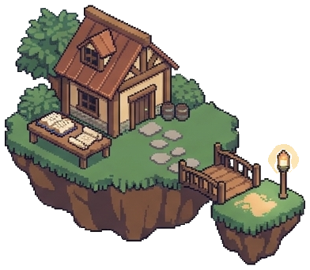
Tutorial Island is the complete shared learning arc across several sessions, not just the first class.
The showcase shows a working build, a clear explanation of your choices, the limits and checks you applied, and a tested improvement. It is a shared starting point, not mastery or automatic teaching approval.
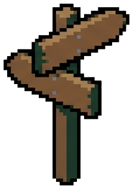
After the showcase, choose one primary route. Add the other when you are ready. Subject learning and new features stay open to both.
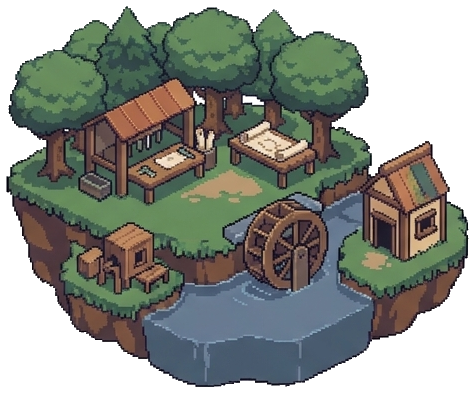
Route A · Practitioner WoodlandRepeated use-case quests, not a fixed feature ladder. Each quest adds to a portfolio of tested work.
Teaching is optional. Work opportunities depend on readiness, fit and demand.
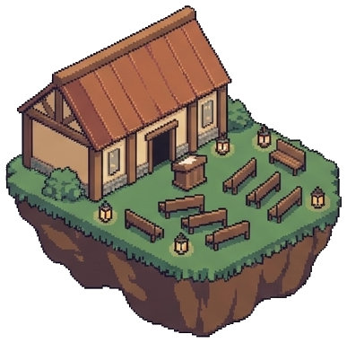
Route B · Trainer HallWork towards teaching independently, with practice and feedback along the way.
Evidence, feedback and readiness reviews govern progression. It is earned, not automatic.
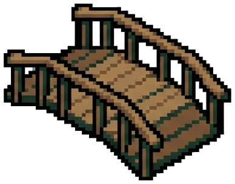
The footbridge stands for optional collaboration between the two routes. Practitioners and trainers can work together on solutions and adoption; it is not a mandatory ladder from one to the other.
Each badge marks a different accomplishment. The practitioner and trainer routes are different crafts, so their badges are separate sets, not one rank ladder.
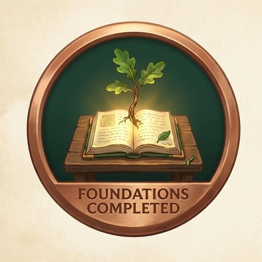
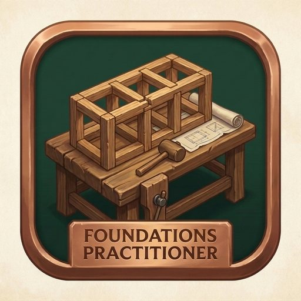
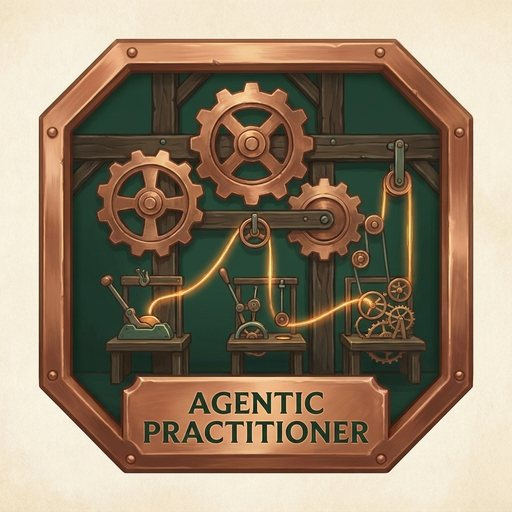
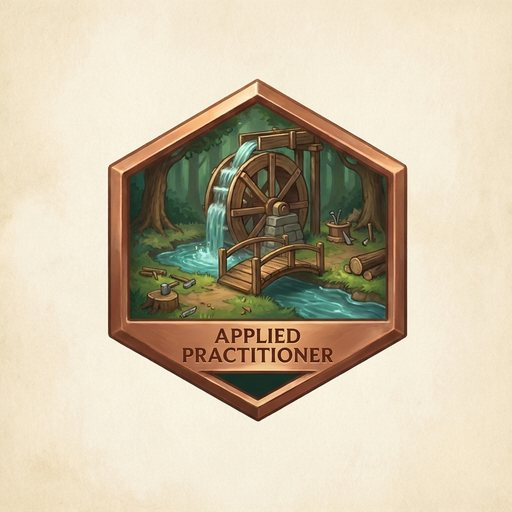
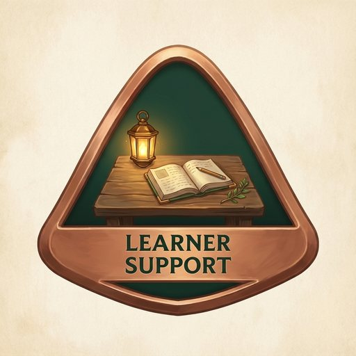
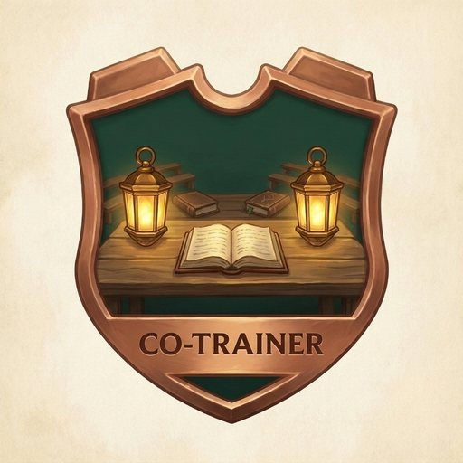
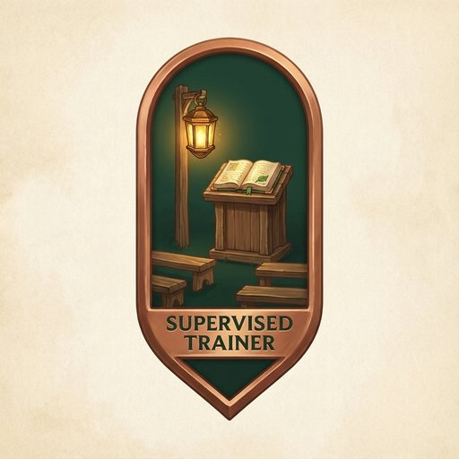
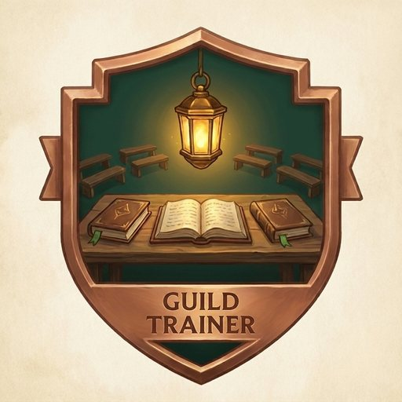
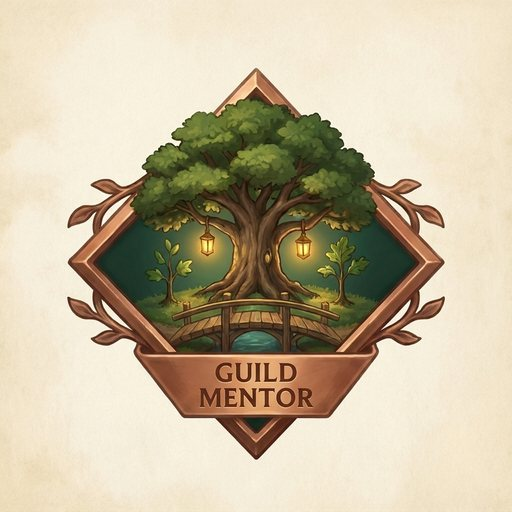
Recognition is still being designed. Badges will only be awarded once the evidence and criteria for each are agreed. Foundations Completed records completion, not assessed capability, and no badge is an official Notion certification, external accreditation or guarantee of work.
Our approach separates completing learning activities from demonstrating capability. For trainers, readiness means helping learners apply the skill being taught, not simply delivering a polished presentation. Assessment details will be shared before enrolment.
No. People can develop as practitioners, contribute to the community or explore teaching when ready.
Not automatically. The trainer pathway requires evidence of teaching readiness for a defined topic and learner level.
The model includes foundations and more advanced learning. Prerequisites and entry routes for the first pilot will be confirmed before enrolment.